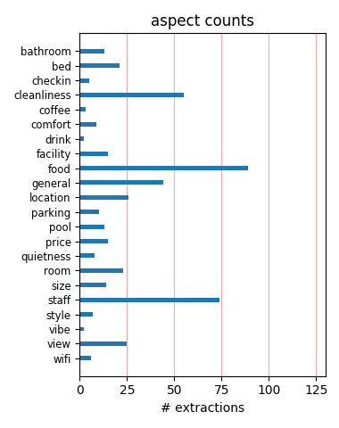
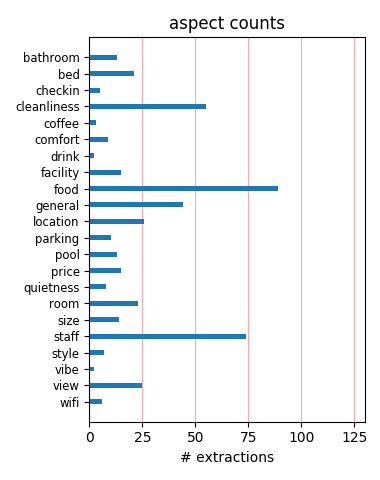

I stay at Hampton Inn hotels frequently for business and this hotel is one of the best! I had the best vacation time at this hotel i have had in a while. The location, accomodation, and service are among the best. I will be back!
Located in a quiet area and close to the Ponce Inlet area, I will come back tomorrow. My room was like new with a great view. The staff was very friendly. The hotel offers a triple A+ continental breakfast and coffee and cokies in the evening.
We had the time of our lives, the host of the Memorial Day BBQ was the best of the best. I have never enjoyed a pool party like this one cudos to her and the team. All and all the hotel employees were also very helpful and the room was clean and very comfortable bed.
My husband and I stayed at this hotel for a nice beach getaway. This hotel is affordable but offers some great amenities. The staff were accomodating. It is further down from the boardwalk and in a nice quiet area. We were very pleased with everything about our stay.
We thoroughly enjoyed our stay at the Hampton. The oceanfront room with balcony, the pristine beach, the proximity to nature areas and tourist attractions, all combined to make it a very enjoyable weekend. I would change nothing about the hotel or its staff. Great job!
Stayed here just one night but there were no problems. Beds were comfy as advertised, breakfast great, and cookies warm and tasty. Parking is free, but tight quarters in the parking lot. The location is somewhat limited as to restaurant selection. Would stay there again.
As a regular at this hotel I do not want to say too many nice things about it or maybe it will be full next time I want to stay.On a more serious note it has by far the best value on the beach. Great staff, impeccably clean, breakfast buffet and great views of the ocean.
Excellent staff. Sandy, fun and knows her hotel, guest and staff. Kyle, thanks for holding cookies for the granddaughter. Shawn, up early, works like a bee and so friendly. This was truley on of my best stays anywhere ever, and I've traveled alot. Jan - Longwood, Florida
I was pleasantly surprised with this hotel. The staff was friendly and helpful. The location is beautiful. Just a few stairs and then you are on the beach. The pool was nice. The breakfast was good. Clean and comfortable rooms. We would definitely come back to this Hampton!
My husband and I couldn't have been happier with our stay. The staff made you feel like family and they sure know how to throw a great Saturday afternoon pool party! The free breakfast was plentiful and the beachfront rooms clean and comfortable. Only wish we could have stayed longer!
Just returned from trip to Daytona Beach, stayed at the Hampton Inn on the beach. All was clean and cheery. Staff was very friendly. Loved the hot breakfast, gourmet coffee and tea available in lobby at all times, cookies at desk in evening hours. Almost like a cruise. Will go there again.
This hotel was very clean and had the absolutely most friendly and helpful staff I have encountered in quite a while. The room was clean and comfortable, very nice size with refridgerator and microwave. Great breakfast, lots of variety. This would be my first choice of hotel in the Daytona area.
My husband and I stay at this hotel all the time and it's the best Sandy, the manager and her staff do everything to make sure you have a great time,and during the summer they have a cook-out every Saturday with music and fun things to do for the whole family.Can't wait to go back with the grandkids.
Who wouldn't want a hotel that's right on the beach at a reasonable price, has clean comfortable rooms with an ocean view, provides a great breakfast, and serves warm cookies at the end of the day? This was my third stay and each time the staff has been helpful and the experience has been consistently great.
This is the first time we have stayed at this hotel.It was very clean and the staff were very friendly.We had a great view of the Atlantic Ocean,although we didn't swim in the ocean because of all the dead jelly fish along the shore.There had to be over a hundred of them.We did see dolphins from our balcony.Great stay.
We stayed here three nights while in town for a wedding shower. It was very quiet. We were on the top floor overlooking the ocean. The staff was friendly and the breakfast buffet was well stocked. Parking is a little tight and you may have to park across the street if you get in late. However, it is free. We would stay there again.
This hotel was fantastic. I have to say that the best part was the "Super Saturday" they put on. Free food, free drinks, karaoke, and a nice cool swimming pool on a hot day can't be beat. The staff would have to be the friendliest I've met, and it didn't hurt that the lobby smelled like cookies. I would definately recommend this hotel.
Totally clean, room was nice, and had a great view of both the ocean and the drive-in church. Free lunch and drinks on Saturday was an AWESOME surprise, and of course Hampton Inn's continental breakfasts are way above average. Easy to walk to restaurants, etc. Highly recommended! Oh, and I almost forgot the fresh-baked cookies every night!
An oceanfront room is the way to go! If you want to stay on the ocean, stay here. The view is awesome. The entire staff is friendly, courteous, accommodating, helpful and make you feel like "family". This hotel is constantly cleaning, fixing and updating inside and outside of the hotel. My friend and I have been coming back to this hotel for 4 years.
The rooms were not worth the outrageous rates. The free internet never worked. The breakfast was horrible. The young man who checked me in was rude and was more concerned with watching the television than helping me and my family find a room that fit our needs. I will never stay there again. For the price I paid, I feel I was owed a little more respect.
This property does not live up to the standard we have come to expect from Hampton Inn. The lobby area is older and not sparkling clean. The room was better than the lobby which was a pleasant surprise, though. For an ocean front room, it was not as run down as many we have seen. We were thankful for that. The breakfast left a lot to be desired, as well.
This was our frist stay at this hotel, but it will not be the last. The rooms were very clean, as well as the grounds. By far the best part about this hotel is the staff. From your first stop at the front desk, to the pool party on Saturday, the staff is friendly and helpful. I think the general manager knew half of the guests by name. We will be regulars from now on.
After staying in Pirates Cove and finding German roaches everywhere we left there and went to the Hampton Inn. Never thought I would live a hotel so much. It's great and very friendly. Awesome breakfast and it's free. Pool is ok but right next to beach so that is great. Away from the main strip but far enough away to get away from overcrowding places. Book it without question.
This was our first stay at this location and everything from the check in process to checking out on Sunday was awesome!! The manager had a Saturday cookout for the guest that was great with food and entertainment. It appeared that almost every guest attended and had a great time. The staff here is excellent and you can tell they really love their jobs. Thanks for the good time!! Tom E.
This is not the typical Hampton Inn. The staff is friendly and courteous but seem to be limited by management/ownership in their ability to really be helpful. Everything was clean but seemed tired. The famous Hampton breakfast was very limited. The pool was decent enough and the beach IS the famous Daytona beach. It is wide and great. Overall, it wasn't bad but it just wasn't good, either.
I booked a stay recently using Hilton Honors award points and due to illness had to cancel after the cancellation deadline had passed. A Hilton Honors rep called the hotel and asked the hotel to waive the deadline - and they did! I really appreciated this being done as they were not required contractually to do this. When I am in this area next time, I will be sure to give them my business.
All of the Hotel staff are warm and friendly. We were greeted kindly and complimentary apples in the reception area. Complimentary beach chairs are a nice touch. Saturday summer free hamburgers, hot dogs, chips and drinks! Free warm breakfast to start our day, and their famous evening cookies are a delight after a day on the beach and a swim in the pool. Overall, a clean, safe, and feel good hotel.
My experience at this hotel is always GREAT. We have been coming here for the past 3 years and always have a wonderful experience. Our room was very clean and housekeeping does its job well. The breakfast buffet served a fabulous spread and everything was hot. The front desk employees are extremely friendly and accomodating. I would definately recommend this hotel and rate this a FIVE STAR experience.
This if the first time staying at this Hampton on the beach. We always stay at the Hampton Inns when we travel as we always know they will be clean. The manager at this Hampton was very friendly as we requested to see a couple of rooms for future visits in which she showed us around. On our trip we stayed at Amelia Island first, then Daytona Beach Shores and on our way home to N.C., we stayed at Sanee, S.C.
This is our new favorite! Staff was very friendly. Arrived on a Saturday but did not partake of the pool party, as was very crowed. Went straight for the beach out the back door! Music from the pool was loud even on the beach, which distracted from the peaceful sound from the ocean. Chose an Oceanfront room and was not disappointed! Clean room, great beds, several pillows, and a small fridge. Will be back!!
We had a great time at the hampton, the staff was great! Everyone was helpful and very nice. Sandy the General Manager was very friendly and wanted to be sure we had a good time, She took the time to stop and speak to everyone, brought out popcycles in the afternoon for everyone. Saturday she had pool party that was awsome. We all sang Kareoke, had Food and drinks and a lot of fun! Thanks for the great time!
Even though this is a large hotel Sandy, the GM and her staff treat you like family. This was our second stay and I have added this hotel to my favorites and will stay there many more times. I can't figure out why AAA only gives them 3 stars. I have been around the world and this place should get at least 4. I also want to give a shout out to Mark and his crew for the Saturday Karaoke. It was an awesome time!
My husband and I stayed here for one night during a multi-day self-guided bicycle tour. The front desk staff were very helpful and had a perfect secure place to keep bicycles overnight. We stayed in an oceanfront room and it was beautiful to have the view of the beach and the sound of the waves. Good Italian restaurant across the street. It was up to Hampton Inn's high standards of cleanliness and breakfast selections.
For friendliness, cleanliness, and location you won't find a better place. The staff goes out of their way to make you feel welcome. The rooms, pool area, elevators, and breakfast area are always clean. I would rate my wife and I as very picky about our choice of hotels and after staying here several times we wouldn't consider staying anywhere else. If it is a nice relaxing vacation you are looking for this is the place.
This Hampton Inn appears to be a family run beach front hotel. The staff was great, very friendly. I really appreciated that beach chairs and towels could be taken off the property and on to the beach. Perfect location and seemed sleepier than Daytona to the north. Lobby and rooms were clean. I thought our room had a musty smell, but I would guess that is common in such a humid area. Loved the balcony. Would stay there again.
Booked this hotel for one night at appx $200. Based on the TA reviews I thought it might be worth it. Wrong. Staff was friendly and responsive but the hotel is in need of renovation. One of the two Elevators did not work. All the Parking Lot lights were out which was concerning bc the rear of the bldg (parking lot, pool and rear entrance) was extremely dark. Rooms were ok but worn and old. If in the area again, I would stay elsewhere.
Great hotel with excellent service! I have stayed at many hotels and the service here is one of the best! The staff is kind and helpful with out being stuffy. They serve a great breakfast to get your day started The pool area was nice with ocean access right off the pool area. The rooms were clean and included a fridge and microwave to keep your beverages cold and to warm up snacks! The hotel was a great value and I hope to return again next year!
My husband and I travel 30 miles from home to get away from it all at this Hampton. The staff is so accomodating and attentive. The rooms are emmaculate. The breakfast is delicious! During the summer months Sandy and her staff put on the best family- friendly beach party in town every Saturday afternoon. Food ,drinks, games...all for the price of your room! The whole experience is so relaxing...why drive farther when you can have it all so close to home!
The hotel itself is great. The staff is wonderful. The rooms are clean and big. The free breakfast was really good: lots to choose from and different every day. The pool was very nice (when we needed a break from the sand and salt water). It is located right on the beach. It is not in downtown Daytona Beach, so it is quiet. But it isn't far from restaurants and activities. It is easy to find. A really great hotel that made it easier to enjoy our vacation.
I highly recommend both the property and the destination! I used to go to Daytona every year after college. I am so pleased with the changes in the city. This is a very up and coming family vacation spot. Didn't stay at the Hampton until early this month. Entire experience was excellent check-in to check-out. Sandy (general manager) and her team are awesome without exception. Beachfront Saturday lunch pool party was amazing...Can't wait to return next Summer!!!
I booked this hotel via a popular websit, travelo.city.com.... the hotel was extemely clean, the staff were extremely competent and polite....the floors glissened all day long as well as the outdoor pool and hot tub. The breakfast was very good and the late night "cookies" were a special touch. The hotel was a bit far away from the Pier of Daytona, however, the distance from the Daytona Beach Pier was well worth the walk! I would highly recommend this hotel to my friends and family.
Had the worst experience at this hotel. Managemnt unreasonable and downright disagreeable. Would not recommend to anyone. The Hilton Satisfaction Guarantee at this hotel means, "If you do not find this hotel to your satisfaction, get out or we will call the police and have you phically removed from the property". Avista Properties and Tristar Lodging, Inc., owners of this property, are the worst. They do not care about their customers and my family and I would not go back to this prope;rty on a bet!
We have stayed at a lot of Hamptons and this one stands out above the rest. Sandy and her team go out of their way to make sure you feel like your at home away from home. The hotel is very clean and well kept and the service is second to none.I would strongly recommend this hotel. On our most recent trip, we had a problem with the brakes on our van 2000km from home and Sandy called a local garage she knew to book us a quick appointment and make sure we were taken care of fairly. Now that is service!
We stayed here for one night during our drive from NJ to Florida. It was the last day of our drive and the kids were excited to get out of the car and enjoy time on the beach. The beachfront location was terrific and its quiet since the hotel is south of Daytona Beach. We all had fun on the beach for hours and then spent time at the pool. The hotel is clean and our room was spacious and had a great view of the ocean. The hotel is a little old and the elevators are slow since there are only 2 in a eight story hotel.
I'm a fan of Hampton Inn's because they are consistently clean, provide good service, have no hidden charges (free internet, free parking, free breakfast) and are generally a great value. While I personally don't feel this is THE BEST Hampton Inn in the US (personal preference: this one has the air of a big Hilton rather than the old worlde charm of most Hampton's), I must say it's unusual in that this hotel is on prime real estate - a beautiful white sand beach and hotel rooms w/ balconies that overlook the ocean. Free cookies to boot!
Typical Hampton Inn … breakfast and Wi-Fi are included in the nightly fee. No parking fee, but you do need to display a parking pass. Room was always clean. Staff was above average on friendliness. Interesting in that the ocean side of the hotel is split between parking and pool/hot tub. I did not use the hot tub, but had heard that the temperature was hotter than expected. Pool was heated, but was luke warm. Not a good location if you need to be near where most of the action is, but the drive is a short 10 minutes to the major attractions.
We stayed Friday thru Monday. Saturday they had a cookout and DJ by the pool which was very fun! The worst part was arriving back to the hotel Saturday night after dinner and not having a parking space. Even the over flow lot was full! People were parking in between the handicapped spots which left those in wheel chairs or with walkers no room to get into their vehical. This was pretty upsetting to have to park in an unlit and unsecure parking lot away from the hotel where I had to worry about being towed or worse. May return, but not on a busy weekend day!
We are currently at Hampton inn Daytona beach shores. This is our third trip here this year and the staff never disappoints us. My husband loves their biscuits and gravy but it was just served on Friday so they are going to surprise him and fix some a small amount on Sunday for him. Where else can you get this kind of hospitality? This is our favorite place to relax. Anyone that writes a bad review just didn't take the time to let the staff make it right. Many thanks to all that put in the extra effort to make us feel at home. This Hampton inn is the best!!!!
Fantastic! Great weekend getaway! Hotel was superb! Relaxing! Our ocean front room was very large and clean. Bathroom was nicely appointed. Exceeded all of our high expectations. Large balcony! Check in was smooth and quick. Very friendly front desk staff who took care of all our needs. Breakfast every morning was very nice incl. waffles, fresh fruit, freah bakery breads, juices, coffee/teas,ceral, eggs, potatoes and sausage served buffet style in nice dining room overlooking the pool and ocean. Great location too! We cant wait to go back to this lovely hotel!
Not sure how people gave this hotel a bad review. The price was VERY fair. The room was fine. I think it could been a little cooler, but it was Ocean Front on the top floor. Sandy was awesome. I need to give her my recipe for the jello shots that she made for the Saturday cook-out, but hers worked out just fine!!!! Directly on the beach, breakfast was fine. I mean, it's free!!! It's not IHOP. I thought it was great!! If you are hard to please, then find a Ritz. This will be our choice when we go back. Sandy won't be able to walk when she has my jello shots!!!!
Very nice facility right on the beach. Large pool area & lunch provided on Saturday. Room was nice, like all Hamptons. Breakfast provided was standard fare for Hampton properties, very good. Staff was very helpful & super nice. Extras: pool towels & beach chairs available for guest use at no charge. Parking is a bit of challenge when the hotel is at max capacity, but overflow parking across the street was really not that big of a deal. Microwave & large fridge was great. Publix & Winn Dixie very close. Weather was great, beach was awesome - hated to have to leave.
The rooms were neat and clean. Price was great compared to other hotels with similar offerings. The staff was very professional and helpful and we were very satisfied with our total experience. The manager hosted a cookout on the patio by the pool for all guests. There was involvement by all the patrons that were in the pool area. There was karaoke and a hoola hoop competition for children and adults. The atmosphere was upbeat and everyone seemed to be treated fairly and enjoyed themselves. What a great experience!!!!! Will be back soon. Great Ocean View and Hospitality.
seeing hotel after hotel I wondered what awaited me at the Hampton Inn Daytona Shores. From the minute I walked in I was treated llike I was a long time highly valued customer (this was my first visit). The room, overlooking the ocean was immaculate, comfortable and modern. Everythign I needed (internet, exta towels ironing board) was all there. Breakfast was perfect. What stike me the most was how clean no spotless the hotel was and how warm freindly and genuine the people who work there were. There is absolutley no quesitn I would stay there again and recommend it to all
We were very pleased with the staff, who were without exception, very friendly and customer focused. They made us feel welcome and were very attentive to our needs. The property itself was directly on the beach with a wonderful view of the Atlantic. Our room had a balcony facing the ocean. Many of the rooms, including ours, had exterior hallways. We did not feel unsafe at all but many people do not like exterior halls. The air conditioner was a little louder than we thought it should be. No extra fees for parking! Overall, we were pleased with our stay and felt it was worth the money.
This Hampton is the best place to stay in Daytona Beach, Florida. From the minute you walk in the front door, the staff is always there making sure you have a great stay with no stress and great experiences. They will do anything to make sure you are enjoying your stay, from the smiles or the items (towels, chairs, toys, skim boards) that you can borrow to take down to the beach to enjoy, especially if you are from out of town. The breakfast is great and the cookies are a welcome snack at night. It is truly a family-oriented hotel and Sandy Ellis is the manager of the year in my book!!!!!
We stayed at the Hampton Inn Daytona Shores - Oceanfront for 6 nights and had a fantastic time. We were lucky enough to be at the hotel for two of the wonderful cookouts that are hosted by the hotel complete with food, drinks and music. The hotel is kept in excellent shape and is very well maintained. As per other Hampton Inns the breakfast is included with your stay and offers great variety over our extended stay. The pool is cleaned every day by a professional poolkeeper! Oh ya the warm cookies in the evenings made you feel like you were at home away from home. Thanks to Sandy and her staff for a wonderful vacation.
We were totally impressed with the genuine hospitality of the staff especially the Geneal Manager Sandy. They had a fantastic pool barbecue for the guests and Sandy was comfortably mingling with guests and even sang a few tunes during the Karaoke. This made it feel like a family reunion atmosphere. Our room was oceanfront with a balcony which we truly enjoy. The rooms were very clean. The extra amenties, free breakfast, cookies, free wifi and even beach toys for the children. We found two great restaurants within miles of the hotel one across the street. This hotel definitely will be our hotel of choice when returning to Daytona.
I have stayed here three times. On this last trip my parents and sister/brother-in-law also came along with me and my wife. Everyone loved it. The staff is super friendly, and they recommended great restaurants. During the summer they have a cookout on Saturdays with free food, beer, and soft drinks. The oceanfront rooms provide a great view of the ocean and vehicles traveling on the beach. You can not beat this hotel for the price. The only drawback is that you have to drive a few miles to get to all the attractions from Daytona Shores. However, with the money you save by staying on the outskirts of Daytona Beach, it is worth driving a few miles.
Wonderful Hotel!!! The staff was extremely friendly. The hotel was clean, as was the pool and hot tub. We were there for the weekend. When we arrived we were surprised with a poolside cookout. Even though it was stormy, the staff grilled hamburgers and hotdogs with all the fixings for all hotel guests. Another surprise was cookies every night at 7:30. One reason we book at Hampton is their free continental breakfast, which was good. Our room had a refrigerator, which was very convenient for water and sodas. Access to the beach was excellent. The hotel even offered beach chairs on a first come basis. We will definitely stay here on future trips to Daytona.
This was a great stay.The location is directly on the ocean, with the pool overlooking the beach. We stayed Memorial Day weekend. They had a cookoutat the pool on Saturday which was fun with burgers,hotdogs,chips, beer,sodas, and a great rum punch. There was kareoke and a dj.it was a very family friendly gathering. The hotel was clean, beach towels are provided for the guests.breakfast was typical Hampton fare.Staff was helpful with dining recommendations.Only drawback is the vendors for beach chairs/umbrellas. Bring money they cost $30.00 a day to rent and icecream man truck on the beach was $4.00 for any item. Overall great stay and will be back in September1
The moment we arrived, the concierge (front desk clerk) was friendly and helpful. After checking into our room, she called to check on us. The view was incredible and the room was impeccable. The next day we were greeted with a wonderful breakfast, beautiful sunrise, and warm cookies at the front desk. The pool was well kept and the beachfront access...unbelievable. Overall, the stay was wonderful. The Hampton Inn has always been a very nice hotel chain, but this experience exceeded all others. We were truly impressed and felt this hotel was an incredible value in quality, customer service, cleanliness, and location. I would definitely recommend this hotel again.
Oceanfront property with a wonderful and caring staff. Everyone that I came in contact with there inquired how my trip was going and if there was anything else they could do for me. I stayed with my 3 kids and everyone was great. From the time I stepped in until I left I felt catered to. The rooms were clean and comfortable with lots of room. Being an oceanfront property it was kept clean from sand. The views from the side blaconies were phenomenal. Elevators were not slow as some are. The morning breakfast was as other Hampton Inns, very nice. If travelling with children or just adults, this place is on the top of my list - and we stay at hotels 30 or so nights a year.
Arrived in Daytona Beach on October 03, 2010, for a much needed vacation, only to find the place I booked on line was a dump. Dirty, bugs, old, stained towels, etc. Spent one night. Called the Hampton Inn, and spoke with John. Arrived at the Inn on October 04, 2010. John was just as nice as he was on the phone. What a wonderful desk clerk crew. He assured me we would be very happy with the Inn. Happy was not the word to describe how we felt when we arrived. From the clerks, housekeeping, to the wonderful breakfast staff, everyone was professional and helpful. The room was very clean. The location of the Inn is perfect. Thank you, for a great vacation.....Connie from Delaware.
This was our third year beach vacation at this Hampton Inn. Sandy and all of her staff are great. The rooms are clean, comfortable beds & pillows and nice free breakfast. The Saturday cook-out, DJ & singing are a fantastic time. It was the one day of our 9 days I did not go to the beach. We were having too much fun by the poo, listening to everyone sing, eating good burgers and watermelon! Sandy and her staff go way above during these cook-outs to make sure everyone has a wonderful time and we all do have fun. I always ask when we make our reservations...are you still doing the Saturday cook-outs? We will be back again in 2012!! My only suggestion is to make the pool area non-smoking.
We stayed 1 night here while on our way recently to Orlando/ Disney World. The motel is nice, has a huge outdoor pool, hot tub was nice, short walk to beach. Our room had a private balcony over looking the ocean (nice) Had 2 outdoor chairs and small table on balcony. Beds slept real good. We were on 5TH floor, heard little noise from other rooms and from outside. Motel serves free breakfast, it was good, had basic breakfast stuff (scrambled eggs, bacon, cereal, muffins, bagels, etc.) Granddaughters loved watching the sun rise the next morning and playing in the cold ocean water before we ate breakfast. Once the sun was up it didn't take long for water to warm up. The area this motel is in seems to be the quieter side of the town.
Staff- front desk and housekeeping were all friendly and welcoming. Room- oceanfront room, terrace had 2 chairs/table- great for enjoying the views, room was clean, updated, wonderful bed and had choice between soft and firm pillows. I never heard any noise from adjacent rooms. General areas- I like the free breakfasts at Hampton Inns as they generally have more options than most other hotels-- this one had 2 hot items, cereals, fruits, pastries, breads, juices/teas/coffees. Also cookies in the evening at front desk. Pool area average, but looks out on the beach which is convenient. This hotel is located in quieter section of Daytona Beach, limited restaurant selection adjacent to hotel. I would stay here again without hesitation.
We stayed here one night, I used Hilton Honors points so I was expecting a standard room but was upgraded to an Ocean View which turned out to be much better then Ocean Front. We had shade for part of the day with great unobstructed views of the beach and ocean, we say on our balcony for coffee in the morning and wine in the evening. The hotel is on the main drag but far enough from the crowds to really feel like the beach was yours. Breakfast was typical Hampton, that said there was plenty of choices and the Waffles were great as usual. Great staff, very friendly and helpful and I would recommend this hotel to anyone. My rating of a five is based on Hampton Inn's I have been to ( over 50) , not compared to a true five-start hotel.
Read the reviews for this hotel and it was rated # 2 for this area, The hotel was okay staff was nice but t.v. was terrible very blury and bed not too comfortable.Breakfast in the morning was just okay too been to many Hamptons and this wasn't quite the same as the others. The other drawback is no restaurant or lounge onsite and believe me there are not too many places around unless you want to drive a bit. The Italian place across the street was reccomended it was very old and outdated we just got pizza the cheese and sauce tasted okay the dough was terrible and the mushrooms were from a can not fresh. I do have to say the beach was nice and the pool area at hotel was nice too other than that I would probably stay elsewhere next time.
If you are looking for a nice, comfortable reasonably priced hotel on the beach than this is it. Our check in Manager was pleasant and helpful, pointing out nearby points of interest, (in our case a Super Market and Liquor Store). No we are not boozers but had been invited to a friends for dinner! Now for the hotel! On the white sand beach, clean beachside deck and pool, the beautiful ocean what more could you wish for. A room on the oceanfront, up high with a nice terrace, clean and comfortable bedding, a microwave, mini fridge and the sound of the surf, well you have it. Free breakfast simple but hey don't waste time inside, hit the beach! Have Fun! Remember this is a chain this is what you get. And for a chain this choice is excellent.
I really enjoyed staying at this hotel! Oceanfront hotel so you can walk right out the doors and onto the beach. Parking is right there at the hotel which is great considering some hotels you have to walk from across the street. Front desk employees were very nice and check in was very quick. We had a room with a balcony and the view of the ocean was very nice (especially the sunrise). The room was very clean and the beds very comfortable. Breakfast was very good. The breakfast attendent was very nice, greeting everyone, making sure all the counter tops were clean and enough food was always available. I loved that there was a fitness center on my floor right next to my room. Over all I really love this hotel and would definitely come back!
We were in town for the cheer and dance nationals, so a number of the hotels were already booked. After looking at reviews online, I found the Hampton Inn. This is the first non-Marriott property we have stayed in for several years, and I was a little apprehensive. But this hotel was great! It was located within 5 miles of Ocean Center and the Boardwalk. So we were close, but not in the middle of all the craziness. The oceanfront room was perfect! The Daytona beach was so clean! Had to get used to the cars, though! The staff at the Hampton was so helpful and accommodating. I am fairly picky in terms of where we stay in terms of cleanliness, surroundings, convenience, etc. and we will definitely return to the Hampton the next time we're in Daytona!
My wife and I stayed here for two nights in an oceanfront room, fourth floor. The room was clean and the bed was comfortable. The view from our balcony was fabulous. All hotel staff we encountered were friendly and helpful. The room was a bit pricey but for this location it wasn't totally out of line. One problem was a lack of beach chairs and umbrellas. There are some chairs available on a first come basis but no umbrellas. We were told that someone would come by with rentals but I was on the beach for hours and all I saw was the ice cream truck. Next time we'll bring our own. We were accompanied by a pod of dolphins on our morning walk. They seemed to be keeping pace with us and were fun to watch. The sunrise was spectacular. We would definitely stay here again.
Our first stay at this Hampton Inn and what a blast we had! Friendly staff...and when I say friendly, I mean friendly like family. We felt at home the moment we walked through the double doors. Clean! Clean! Clean! The service was exceptional from the front desk staff to housekeeping. (Thank you Adrien!) My son loved the baked treats every evening and the Saturday cookout was an awesome plus. My daughter conquered her stage fright that afternoon when she sang TWO karaoke songs. The fun was contagious. What a great way to get to know your temporary neighbors. The only thing that could make it better would be a couple of shade trees beside the pool. We really enjoyed our stay. Thanks Sandy for a great time. You are the hostess with the mostest girl! We will see you next summer!
This was my first stay at the Hampton Inn and it was AWESOME! The location was great with a grocery store just down the street, souvenir shops close by along with a couple of restaurants. All the staff were extremely friendly and went out of their way to accommodate anything we asked for. Sandy Ellis was just terrific in making sure we had adjoining rooms with ocean view. John, Kyle, Donna and Maureen at the front desk were always pleasant and helpful in recommending restaurants. Bill and Sean also were very nice and friendly. The rooms were large and very clean, breakfast was more than I expected and the cookies at night were a sweet treat to end our fun filled day. I am looking forward to staying there again this summer with my family and again next year for the girlfriends getaway!
I stayed at the hampton inn daytona beach shores and as a hilton family employee i got a special rate, i had a good experience at check in it was quick and easy they even had fresh baked cookies, as a hilton employee i was not eligible for upgrades but the room i had was on the top floor in the corner with a partial view of the ocean the room was clean and large. my daughter absolutely loved it, i loved it my fiancee loved it, we went to celebrate his birthday and we did more than that , its not only the staff at the hotel but the people in the local shoppes and restaurants were truly hospitable, the only thing i didnt like was the small , confined parking space... oh and they have a free hot breakfast and wireless internet, not to mention its only steps from the worlds most famous beach!!
I can't imagine anyone getting better service and all while smiling,and that makes a big difference ! The rooms were very nice and clean. The beds were great. The mattres was nice,thick and firm and not sagging in the middle. Refrigerator and microwave were nice. Bathroom was really nice and roomy. Every morning you got a different breakfast ( FREE ) and good !! At 7:30 every evening they have the best warm cookies! The pool area kept nice. Inside,everywhere you look someone was always cleaning and shining something and always friendly and smiling. I just wished that they had a cocktail lounge or a little bar outside so that we could have a frozen drink or cocktail in the afternnon or a hotdog. We fly in to daytona to relax and tan so running around in a car is not a vaction to us. we run around in a car a traffic enough at home.
After our nightmare at the Mayan Inn...we were able to book rooms immediately, but the cost was much more, but well worth it! We had ocean front and my mom was so happy, the smile on her face was priceless, for being 70! The front desk people were so friendly and helpful. We walked into the room and the beds were to die for!!!!!!!!!!!! White comforters that were soft and comfy...3 pillows in each bed that were great....best 2 nites sleep in a long time. The breakfast in the morning was the bomb! You name it, they had it, biscuit and gravy, cheese omelets, scrambled eggs, cereal, oatmeal, fresh fruit, make your own waffles....it was great! They had beach chairs for their guest and towels. The only thing was the pool was not heated.The hotel is away from the hustle and bustle of Daytona Beach, but it you want it low key, this is the place to go.
The location for this hotel was great, it is right on the beach! The pool faces the ocean which is really nice. The inside of the hotel downstairs was being worked on while we were there. The rugs are not in good condition but that is probably because of being on the ocean. The rooms were ok but not what we are used to for a Hampton. The staff when checking in was not nice. We had just arrived after a long drive, and we did not feel welcomed at all. We felt we were imposing when asking for beach towels. The hotel has great toys for kids to take to the beach such as boogie boards and sand toys. There is a rental company on the beach that rents chairs and umbrellas. The breakfast was very good and well stocked. The price is good but there are many hotels on that beach strip. If you have kids it would be great but if you are used to better than I would look somewhere else and spend more money.
My wife travels 5 days a week and stays at Hilton hotels usually 6 weeks at same hotel across the country and this is by far her most unpleasant Hilton experience yet. She has just sent me a picture of her tub filling and even though the hotel claims they checked it the water is yellow. Usually if there are any problems you can count on Hilton Hotels to make it right however this hotel is beach front so they seem to be of the belief that if you don't like it we have a waiting list of people who will. These Hilton hotels become her home for months at the same hotel so the staff is who is entrusted with her well being and I feel this is not Hilton behavior. This may be a case of just bad luck however the only answer the hotel is giving is the water was fine when we looked "See picture below". Having to stay in Daytona for the next couple months the thought of yellow water baths and showers isn't very appealing.
Stopped at this hotel for a rew days of R&R after 6 days at Disney World. What a GREAT choice. The staff was EXCELLENT. Greeted at checkin by Donna. She was super. Friendly, helpful and just super to deal with. She got our stay off to a great start. Especially after Disney and the rush hour drive from Orlando. The hotel was clean and the support staff all friendly and polite. Donna pointed us in the right direction for a great sea side dinner that evening too. An added bonus to the breakfast, was on Saturday they hosted a BBQ cookout poolside with Karaoke. That was a blast. General Manager Kathy, Maureen (Mo) and company really know how to treat the guests to a great time. I highly recommend this hotel to all travelers headed to Florida. We had a great ocean view room too. Only regret is we didn't stay longer. (Had to go back to work, UGH!) This is how a hotel should be run. THANKS for everything. We will be back.
We were driving down to the west coast of Florida at the end of Dec. and our first beach stop was at the Daytona Beach Hampton Inn. The front desk was extremely friendly and very helpful with dinner suggestions. Our room was nice with a flat screen TV,comfortable beds, and after seeing the view from our balcony we decided to walk on the beach. I locked our cash in the safe and enjoyed the immediate access to the beach.The next morning I forgot to check the safe and realized it upon our arrival on the West Coast. I called the front desk and the young man called the room to see if he could check the safe. He called me back that he would have to wait for the guests to return but would call us later. Amazingly, he called with wonderful news that he had found our money. He and the General Manager mailed me a check to arrive at our next destination. I was so happy and impressed that this hotel values service and honesty above all.
From the moment of checking in until the day we left, my friends and I were treated like dogs by the unprofessional staff. We were falsely accused of smoking in a non-smoking room by the asst. mgr. Donna and forced to leave within fifteen minutes of notification. Because we had a discounted room we were treated -- by management and forced out due to the incense we burnt in the bathroom. Being that this was during spring break, everything was sold out and not that it really mattered because they kept our money for the entire stay and charged us an additional fifty dollars! These are money hungry people who give Hampton Inn a bad name! It is not about you here, it is all about your money and how much they can rob you from it! If you have discount, beware, because they will hound you from the get go making your stay absolutely miserable. Don't make the same mistake we made! Have a good time and stay were you are wanted. DON'T STAY HERE!
This was our 2nd time staying here, and the first time attending the summer pool party. Free burgers, dogs, chips, soda, beer, rum punch (and others) .... and Jell-O Shots! They had a very good DJ/Karaoke set up at poolside that played great music and provided low-key family fun. The participants were fun to watch and everyone had a wonderful afternoon. A really nice family event overlooking the beach and Atlantic Ocean. The rooms were very nice and the staff was great. This is a clean, well cared for hotel and the staff seems to care that you are well taken care of. Free, freshly made, warm cookies every evening and better than expected buffet breakfasts each morning. We had a small group and wanted to watch our college football game during the afternoon pool party. They graciously accommodated our use of the dining area wide screen. Our stay was for 5 days and it couldn't have been better. For the money and quality this place can't be beat.
We stayed at the Hampton Inn because it was close to our old stomping grounds. We had priced some of the Mom and Pop motels and for less than $10 more we got much more. We had an ocean front room with a king size bed. Our only complaint is that the pillows were very soft, and for us they were hard to sleep on. That being said, the rooms and the property were spotless. We were arriving the day Biketoberfest ended, and there were no signs of it. The pool was great, there were so many lounge chairs, also poolside tables with umbrellas. The hotel offers beach toys for kids and beach chairs for everyone. The breakfast and attendants were wonderful. Cookies in the evening too. Ponce Inlet is just a couple miles South, Daytona Beach is North. The hotel is conveniently located to restaurants and the local Publix grocery store. I can't say enough about the staff and we are so glad that we picked this hotel. We will stay there again and recommend it to our friends!
We just love being at this hotel. We stayed here for two weeks last year and enjoyed it so much that we came back for three weeks this year. As other people said, all the staff were the best. They are very friendly, very accomodating, and do treat everybody like family. We read the review that said they don't care about the guests and would sooner kick you out. I find that so very hard to believe based on our experiences. The hotel is right on the beach, which we love, and the pool is great. The hotel is very clean. The rooms are very quiet. They offer a great hot breakfast. There is such a variety of food at breakfast, that I would be surprised if someone couldn't find something they like. Five minutes before breakfast was to close, each table was individually informed that it would be closing in five minutes. We highly recommend this hotel if you are looking for a great, friendly place right on the beach that is reasonably priced. We can't wait to return.
We stayed at the Hampton for nights after a 5 night cruise. I chose this hotel as I stayed here several years ago, also due to the location as Daytona Beach Shores is quieter. The manager was checking people in as she indicated that some staff for the day shift were no longer available. She did acknowledge us and a few other folks who were waiting to check in. We had a room on the 5th floor in the corner facing the ocean. Our room was very clean and well kept up. The room had a nice size fridge and microwave with a small coffee pot in the bathroom. 2 plastic chairs on the balconey. Pool water was a bit cold but some people didn't mind it . We were there for a Thursday and Friday night and the hotel and beach was quiet. Breakfast was good with a good variety. The hot foods besides the waffles was scramble eggs and biscuits and gravy on Friday morn and eggs and sausage pattys on Saturday morn. All public areas including the bathrooms were clean and neat. Parking lot is a bit small but was no problem as the hotel wasn't full. OVer all a great stay and will stay here again on my next stay to Daytona.
We stayed here sept 26th 2011 for 3 nights. There was plenty of parking, the lobby was clean and check in was quick. The staff was always friendly. At the check in desk they always have tooth paste or other toiletries in case you forgot them at home. Warm cookies were out every evening around 4-7pm. There is a red lobster 1 block south as well as dennys. A gift shop across the street and a publix grocery store 2 blocks north. The oceanfront rooms were clean, spacious and had very comfy beds. The internet was fast and the sun rises were almost as fast and very beautiful. All 3 mornings we saw baby dolphins chasing fish in the breaking waves right in front of the hotel. The waves were so much fun as we did boogie boarding each and every day. The complimentary hot breakfast was very good with a different main entee each morning. The pool was big enough with plenty of comfortable chairs and the hot tub was in a secluded spot . There was a large box next to the gate down to the beach with misc beach stuff in it that is free to use. The beach is very clean and wide in front of the hampton. They recently renovated this hampton hotel and we believe it is much better than any other hotel in the area.
I went to Daytona Beach with friends from Germany to watch the space shuttle launch. We chose the Hampton Inn in Daytona Beach Shores because it is fairly close to the space center & from the positive reviews on Tripadvisor. We were more than pleased with our stay! The front desk staff are very friendly & helpful. The room we stayed in was oceanfront & very clean. The queen beds were comfortable with 4 pillows on each one and the linens smelled fresh & clean. The bathroom was sparkling with larger than normal towels that were soft & thick. The breakfast which was included with our room consisted of waffles, sausage, bacon, and an array of danishes & breads to choose from. They also provided bagged snacks at the front desk which had a piece of fruit, a granola bar, & bottled water & a tray of cookies in the evening. Beach towels were provided for the hot tub & pool. I can't say enough about how clean this hotel is. From the banisters, to the public restrooms, to the pool area, someone was consistantly picking up & polishing. I live within a couple of hours of Daytona & spend the weekend there several times a year. The Hampton Inn in Daytona Beach Shores will be the only place I'll be staying from now on. It's a bargain & a pleasure to stay there.
wonderful time-ocean front with private balcony, queen beds with 3 pillows per bed(one of them has to fit your taste),fan folded towels, continental breakfast is truly "hot breakfast" (beats anyone-different hot item each day, cheese omlets,sausage biscuits, sausage and french toast, ham and cheese scrambled eggs- all excellent) with all other things-yogurt,pastries, hot and cold cereal,fresh and peeled tropical fruits, bagels, muffins, etc.)If you eat this for breakfast, you're going to want to try the local rest for dinner, what would you need a kitchen for anyway. They have refrig and microwave if you want to eat in, anything is microwavable now. wifi and temp membership to Golds Gym (1 block away), as well as on site rec room. Staff super helpful. Fresh apples and hot baked cookies at night a plus.Heated pool and hot tub. For the beach: lounge chairs, pails with shovels for kids, boogy boards, "floaties", towels. Beach is nice, saw schools of sting rays (way cool) 2 evenings and dolphins from our balcony every morning.ample free parking, clean rooms, wonderful staff. I'm told through the summer they have free cookout every Saturday night (hot dogs,hamburgers etc.) 7 minutes north to board walk.Just south are wonderful oceanfront restaurants.
There was a woman mgr. who refused a 9 yr old girl and her 30 yr old uncle to swim with us while on vacation. We come here every yr. with other hotels and that would never be an issue. That was the whole reason why we stay in hotels and not with them so that we can all enjoy the pool and hotel together. This lady ran this pool party they had and wouldn't even give them the time of day to listen..... she made up her mind about my family immediately and would not even consider she might be wrong. We ended up going back to there house in Daytona and cooking out. No pool.... No beach.... and No hotel... However it was a great day after that little incident. When has anyone heard of a hotel that you are only allowed visitors to your room and no where else? THATS CRAZY! Oddly enough I called the next day and I was told by someone else that I can swim with my family and that she was just being rude. So that mgr who knows exactly who she is needs to maybe consider taking some customer service classes or maybe even some anger mgmt because she is undoubtably the rudest person in customer service i have ever encountered. Other than that the hotel was actually pretty nice, however they need a more lively and respectful person to run those events. She wasnt exactly FUN.
My husband was going to Daytona for business so I went with him, brought our grandkids. The company had rooms blocked at a supposed upscale hotel 5 miles further north. When we arrived we checked the room and area and I decided I did not like the hotel, or the area, and did not feel safe having my small grandchildren there. We went to the Hampton based on remarks on Trip Advisor, and because I lived in Port Orange 20 years ago I was familiar with the area. When we arrived I asked to look at a room and was allowed to check the room. It was great! The hotel is wonderful. Great area, great staff, great fun. On Saturday they had a pool party, with DJ, hamburgers, hot dogs, drinks, etc. The hotel is steps from the beach in a safe location for families with kids. The desk gave us recommendations for dinner. There is a Publix just up the street to get sandwiches, drinks, and the room has a refrigerator and microwave. Breakfast is great each morning. I talked to many people at the pool and discovered they are return customers and make this hotel a place for family to gather. My husband and I enjoyed the trip so much we booked another visit before we left. I have to say staying in Daytona this weekend at this hotel made he rethink some of the trips we take to Key West. Loved It.
My husband and I rented a beachfront condo on the Gulf side for six weeks. We are now heading back to Canada the slow way, up the Atlantic coast. This is our first hotel stay and we found it an easy transition. Our room is on the top floor facing the ocean. The balcony is sheltered from the wind and very comfortable, even in the unseasonably cool weather Florida is having. The weather was warm on our first day and we made good use of the large heated pool. It is surrounded by lots of chairs, so you don't have to "stake your claim". And the beach is only a few feet away. The hotel is older but clean and in good repair. The rooms are decorated nicely. We didn't have any problems with the parking lot. Although the internet is free, we did find it a bit slow. It would have been nice to have a screen door on the balcony as the bugs were attracted to the lights in our room. And finally, we did tell the desk about how long it took for the water to get hot in the shower and about the variable water pressure. P.S. We were here during Bike Week. What a fabulous experience. Yes, it gets noisy and crowded, but it's worth it to see the beautiful bikes and to people watch. We didn't have any trouble getting into the restaurants we wanted, or in driving around town sightseeing. Go, it's worth it.
We are so glad to have discovered this "oasis" on the beach ! Beautifully decorated, clean rooms with a microwave and refrigerator and great priced oceanfront rooms where you can sit back on your larger than normal balcony and watch the action on the beach ! The pool was very clean, larger than most Hampton Inns with lots of chairs and the perfect temperature. Easy access to the beach - just a ten second walk. We were lucky enough to arrive in time for their Saturday afternoon BBQ (which they provide FREE every Saturday afternoon weather permitting from Memorial Day to Labor Day!) What a nice treat! Hamburgers, hot dogs, drinks, beer (even rum punch the day we were there!), chips and an afternoon of DJs and karaoke ! What more could you want! Sandy, the manager, is THE BEST! You will feel like family by the time you leave! Course we didn't want to leave! The free breakfast changes their hot item every day so that is a refreshing change from other hotels. The food was fresh and tasty and most of all, there was always plenty of it even on their busiest mornings. Oh yeah, I can't forget the warm cookies every night at the front desk and the friendliest staff in town ! We found lots of good restaurants near by for lunch/dinner ! I won't stay anywhere else and I will definitely be back !
I am so surprised this was rated so high. There was a huge black hair in our bed the first day we got there which was okay because I realize maybe it was just an oversight and I was hoping that it wasn't because they didn't even bother to change the sheets but we soon found out that housekeeping is a joke here; they won't change your sheets unless you specifically ask. That is unlike other beachfront Hampton Inns I have stayed at that change the sheets daily because they have the foresight to realize that at the beach you tend to get sand in the bed. The staff acts like everything is a hassle; my spouse and I asked if we could extend our stay and the person at the front desk acted exceptionally annoyed at my request and told me he was too busy for me to pay now and asked that I pay later. I told him I was leaving very early in the morning and needed to pay then and he unhappily complied. The pool was very nice and they brought popsicles out to the pool occasionally for the guests during the heat of the day which was very nice and our bed was very comfortable. I am generally a faithful Hampton customer, but once you stay at the Hampton Inn at Myrtle Beach and then come to this Hampton expecting the same quality and value you will be disappointed with your stay-- it is like two different companies.
Our family of 5 stayed a couple of nights here. This hotel is right on the beach and was very clean. A great family friendly hotel, no partys. Every employee we encountered was kind and helpful....they seemed to actually be happy to be at work! We had a very large room with 2 queen beds and a sleeper sofa. Beds were ok, a little hard, but still comfy. Linens were new and very clean. We paid extra to have a beach view room. The only down side is that the rooms with the sofa sleeper ane only on the ground floor and do not have direct beach access and do not have any balcony. They are larger on the inside, though and it was just down from the breakfast area, so getting to the beach was fast. We just didn't have anywhere except the shower rod to hang wet swim suits and towels. Bathroom was clean and had a good sized counter, water pressure in shower was great. Towels were extra thick and felt extravagant! Breakfast was the usual, but Hamptons in Florida offer a wonderful fresh fruit salad! Always, warm cookies in the evenings, too. We never used the pool, but there was a storage area that had beach toys and boogie boards for guest to use for free! Our kids really had a great time with them. We walked across the street to a great Italian restaurant...can't remember the name, but the 5 of us left stuffed for less than $65 including the tip....best egg plant parmisan ever! Great for vegetarians and meat eater alike!
The hotel is located right on the beach, at the quiet end of Daytona Beach Shores. The location couldn't have been any better. My room was spacious with two queen beds and a table with two chairs. The bed was very comfortable. The balcony also had a table with two chairs. The bathroom was average at best, however very clean. The room was very clean as well. Now for the not so good: Upon entering the hotel, a guest was in the middle of a beating from the front desk clerk while trying to use his Hilton points to pay for the room. After that (and 15 minutes of waiting), it was no surprise that the front desk clerk was no friendlier when I checked in either. A couple of hours later when I turned my television on, the channels were so fuzzy I could not see anything. I called the front desk to ask about it and he said maintenance was right there and would send him right up. 30 minutes later, maintenance finally arrived. To make a long story short, I had to keep wiggling the cable in the back of the television until the channel was clear again. The internet connection was pretty slow - bordering on dial up speeds. When I left the next morning, I said good-bye to the front desk clerk who responded with nothing. Normally, I would have given this hotel a 4 out of 5 or even a 5 out of 5 for their location and cleanliness. However, with this type of service, I just couldn't. Based on the location and cleanliness I would probably stay here again. Just understand that the service will be lacking.
We were skeptical to book almost any hotel in Daytona, because quite frankly they all look a little dingy online. Pulling onto a1a we (myself and my girlfriend) were extremely nervous, seeing all the small, worn out hotels and houses. As soon as we see the Hampton, it was like a breath of fresh air. Building looks good, bigger than i had thought. Upon check in the gentleman working the desk was extremely helpful. Gave us info on the BBQ/pool party, gave recommendations on where to go and eat, and lastly told us that cookies would be ready in about 10 minutes (you could smell them baking). We had a ocean view king room on the 4th floor (room 401). Room was clean, fresh, large and updated. Big tv, microwave, decent sized dorm fridge, balcony, etc. Hallways were all clean, presence of housekeeping is noticeable. Top points: The BBQ/Pool party- fantastic. We grabbed some chairs early just to catch some sun, no intentions of staying for the BBQ. Once the dj got there and the grill fired up we couldn't leave. They had people walking around with jello and pudding shots (both alcoholic and not for the kids). Burgers, hot dogs, beers, sodas, water etc. We met some great people there and everyone had a blast. Free breakfast- The breakfast was good. I would say a little better than your typical hotel breakfast. Different options every day (eggs and sausage one day, biscuits gravy the next) in addition to all the normal bagels, toast, yogurts and fruits. Overall, we did not see any reason to stay anywhere else. Good people, good rooms, good price.
Like other reviewers before me, I don't understand why some people posted negative comments about this hotel. I travelled on my own from England and I based my choice of this hotel partially on Trip Advisor reviews and I was NOT disappointed! Fantastic location on the beach! I had an oceanfront room on the 8th floor which was large by British standards and was surprisingly quiet which I appreciated. I have nothing bad to say about this hotel, only good! I didn't realise I had chosen the quieter end of Daytona but was grateful that I had after seeing 'downtown' and the Hilton which was the other hotel I was considering. I could see nothing wrong with the lobby, it was perfectly fine and the whole hotel was very clean, quite a feat considering the amount of sand we brought in! Any shop I needed was with 5 - 10 mins walk and not only was there public transport but it was easy to use. The staff were excellent and all genuinely enjoyed their job. I talked to staff from maids to the engineer. The Reception staff are excellent and I caught Kyle at his best, frequently. He is a real asset to this hotel and was always friendly and helpful when I had a question. The 24 hour tea and coffee station was much appreciated, especially the tea! and the fruit and cookies at Reception as well. I wondered what the big deal about the cookies was, until I tried them, Awesome! The breakfast on the run was much appreciated at 5 am when I checked out. The room price was very reasonable considering the location and it was cheaper than my Heathrow Airport hotel! What more can I say, if you are looking for a great hotel in Daytona, look no further!! I only wish I was there now and hope to visit again one day!
Hampton Inn's are my choice so I stayed at the Daytona Shores property. The manager (Donna) and her staff are fantastic. I had a conference in Daytona, this hotel was less than 10 minutes from the Hilton, great free breakfast, free parking, free wireless, great cable with HBO, pool overlooking the ocean. Other hotels charge extra for most of these amenities. Oh, and Donna knew I was working late and asked me what kind of cookies they should set aside for me. Can you imagine? How nice is that. The hotel was extremely clean and my Ocean front room had a walk out balcony with table and chairs for a price much less than hotels in Dayton. In fact many of those hotels don't even have a balcony. And, if you are in the area for work or don't want to listen to motorcycles cruising the loop in Daytona, this place is very quite with the exception of the ocean. I left my private balcony door open all night. If you stay above the 5th or 6th floor, people on the beach can't hardly see into the room. Day one I was in a crunch to get materials for a conference. They gave me direction to a copy location and gave me a coupon for the place too-Amazing. The second day they were power washing, waxing, and vacuuming the lobby floors and elevators. Day three there was a guy scrubbing the brass railings. I've stayed at Hotels all over the states and if you are like me and don't care about a fancy lobby and just want good service, clean rooms, decent price, and great extras this hotel is it. Not to mention you are right on the beach. Sun came up in my room every morning. Stop looking at book it. Thanks Donna! P.S. Good grocery store nearby and don't forget to drive down and check out the Ponce de Leon lighthouse.
We have stayed at this Hampton Inn 4 times in the last fifteen years. We like the location and returned here because of a good AAA rate we got for 3 nights in an ocean front king room. But we were disappointed that they have done very little to update the hotel. The lobby and the rooms look just like they did 15 years ago (with the exception on a flat screen TV-which was nice.) Most Hamptons have updated their bathrooms to granite counters, and have more updated decor in the lobby. The bedspread and shower curtains were wrinkled, but probably because they are laundered between guests- which is good. We had a nice refrigerator and microwave, and 2 comfy chairs. Our bed slept well, and we had a great AC unit. We love sitting on our private balcony watching the ocean and beach activities. We enjoyed the warm cookies each evening and 24hr. coffee. The breakfast was okay-but not great. They cram 53 people in their small dining area, and we could hardly eat our breakfast for people bumping into us, multiple trips to get their breakfast. One morning we opted to go across the street to Dennys, and enjoyed our Grand Slam breakfast-in a very relaxed atmosphere! But the day we left, we went down for breakfast at 6:30 am-when it was still quiet and the food was fresh. The front desk clerks were nice and gave suggestions where to go for dinner. If you don't have a car there is a Red Lobster, Denny's, and an Italian restaurant within walking distance. The front desk clerk suggested Racings North Turn, but we wished we had just gone to Red Lobster-for better food. We did enjoy Bubba Gump's Shrimp down on Daytona Beach at the Boardwalk- it was great! I had read reviews about pool parties on Saturdays, but there was no pool party the Sat. we were there.I think next time we'll stay down near the Boardwalk, where all the good restaurants and fun activities are. There are lots of nice hotels and condos near the Boardwalk.